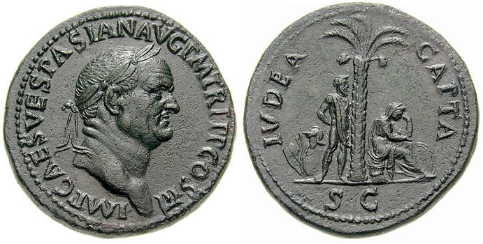

Unit 6 · Slavery in ancient Rome · Lesson 2
Where did Rome’s enslaved people come from? An independent investigation
War, pirates, birth, abandoned babies, sale and debt: how did people become enslaved between about 200 BCE and 200 CE, and how sure can we be about which way mattered most?
Year 11 Ancient History · Today you work at your own pace: every step is on screen and in your booklet · On a phone or tablet, use Read mode (the Read button)

Start here · read this first · 2 minutes
Start here: how today works
Work through the five steps in order, at your own pace. Every instruction is on this page and in your booklet. The minutes are a guide, not a race.
- 1Get ready 5 minutesOpen your booklet at today’s pages: the grid, a Cornell notes page and the writing card. Read today’s goals and the key words.
- 2Read and note 25 minutesSeven short source sets, in order. For each: read the sources, fill that row of your grid (evidence · date · what it cannot show), answer the check question, then check your answer.
- 3Writing card 6 minutesRead the model paragraph, cover it, rewrite it from memory, then check it against the model.
- 4Your paragraph 17 minutesDeconstruct the question (verb · topic · limits · do), check it, then write one explanation paragraph.
- 5Check and hand in 7 minutesTick the three points on the checklist, write your exit ticket, then hand in your grid, your paragraph and your exit ticket together.
Write your own answer first. Then check it. On a device: use Read mode (tap the Read button, or press R on a keyboard), then tap the button under the question (“… then check your answer”). On paper: ask your teacher for the answer sheet, or to show that answer on the screen. Mark your answer in a second colour.
Re-read the source and use the key words. Write your best answer, check it, and move on.
Mark where you stopped, and carry on from there.
Write the three-sentence summary, then try the Extension card next to your paragraph.
Learning intentions and success criteria · 1 minute · read them yourself
Today’s goals
- analyse the evidence for how people became enslaved in the Roman world
- work independently with sources
- explain four of the five ways people became enslaved, each with a source
- say what each source can and cannot show
- write an explanation paragraph that names the main way and qualifies it
Today’s grid has five rows: choose four of the five, each with a source, to meet the first “I can”.
Syllabus outcomes: AH-11-02 proposes ideas about the varying causes and effects of events and developments · AH-11-05 analyses different types of sources for evidence to support a historical account or argument · AH-11-07 communicates historical understanding, applying historical knowledge, terms and concepts. Life Skills: AH-LS-04 recognises causes and effects of events or developments · AH-LS-11 communicates information about the past using historical terms and concepts.
Note-making · today your grid is your notes · 1 minute
How to structure your notes
| Way into slavery | Evidence (source, number) | Date | Cannot show |
|---|---|---|---|
| 1 · War captives | |||
| 2 · Pirates and the trade | |||
| 3 · Birth (vernae) | |||
| 4 · Exposure | |||
| 5 · Self-sale and debt |
- 1One row per wayFill each row as you finish its source set. Phrases, not sentences.
- 2Evidence means a sourceWho wrote it and when, plus any number it gives. Write a number as a claim: “Caesar says …”.
- 3The last column matters mostIt answers the cue question: what can this source not tell us?
- 4Check at the ✎ checkpointAfter the last source set, compare your grid with the model notes, one row at a time. Add what you missed in a second colour.
- 5Summary if you finish earlyThree sentences at the bottom of your Cornell page (its cue question is your grid’s last column).
Key vocabulary · 1 minute · use these words in your paragraph
Words for today
| Verb (NESA) | Meaning · what the answer does |
|---|---|
| Explain | ‘Relate cause and effect. Make the relationships between things evident. Provide why and/or how.’ Department advice: show how and why, and which reason mattered most. |
| Content terms | Meaning |
| Captive | A person taken in war and often sold into slavery, e.g. 150,000 from Epirus (Polybius’s figure, as Strabo 7.7.3 reports it; the sack was in 167 BCE). |
| Verna | An enslaved person born in the owner’s household. |
| Exposure | Leaving a newborn baby to die or be found; some foundlings were raised in slavery (Pliny’s question, Letters 10.65, and Trajan’s reply, 10.66). |
| Delos | An Aegean island and great slave market of the 2nd–1st centuries BCE (Strabo 14.5.2). |
| Jus gentium | ‘The law of nations’: rules Romans thought all peoples shared, under which they classed slavery. |
| Added today | Meaning |
|---|---|
| Foundling | A baby who was exposed and then found and raised by someone else. |
| Pirates | Sea raiders who seized people and goods; Strabo’s pirates came from Cilicia, in modern southern Turkey. |
| Slave dealer | A trader who bought and sold enslaved people (Latin venalicius or mango). |
| Self-sale | A free adult letting himself be sold. |
| Tax farmers | Private contractors who bid for the right to collect a province’s taxes for Rome (publicani). |
| Claim · count · estimate | A number a source states · a number someone recorded by counting · a modern historian’s calculated guess. |
Step 2 · Read and note · source set 1 of 7 · about 4 minutes · grid row 1: war captives
War captives under the Republic: whole peoples sold
Polybius says that Paulus, after his subjection of Perseus and the Macedonians, destroyed seventy cities of the Epeirotes … and reduced to slavery one hundred and fifty thousand people.
Strabo (born about 64 BCE), Geography 7.7.3, early 1st century CE, citing the historian Polybius on the Roman general Paulus in Epirus (north-western Greece), 167 BCE · trans. H. L. Jones (Loeb, 1924)
… then Caesar sold as one lot the booty of the town. The purchasers furnished a return to him of three-and-fifty thousand persons.
Julius Caesar, Gallic War 2.33, written in the 50s BCE, on a town of the Aduatuci, a people of northern Gaul, captured in 57 BCE · trans. H. J. Edwards (Loeb, 1917)
He calls Polybius’s 150,000 “the largest recorded tally for a single operation that may bear some resemblance to reality”, and warns that while such reports “may well be exaggerated, they nevertheless cumulatively understate the actual scale of slave-making”: many wars were never counted at all.
Is each number a count, a claim or an estimate? What can these sources not tell us?
Both are ancient claims. Caesar’s 53,000 comes from the buyers’ return, so it is closer to a count, but it reaches us through his own account of his victories. Polybius’s 150,000 reaches us second-hand, through Strabo. Neither can tell us how many people Rome enslaved in all, or who the captives were and what happened to them after the sale.
Step 2 · Read and note · source set 2 of 7 · about 3 minutes · grid row 1: war captives
War captives under the emperors: fewer wars, still captives
… the number of those that were carried captive during this whole war was collected to be ninety-seven thousand …
Josephus, who fought the Romans in Galilee, surrendered, and saw the siege of Jerusalem from the Roman side, Jewish War 6.420 (6.9.3), written about 75 CE, on the war in Judaea that began in 66 CE · trans. W. Whiston (1895 printing), Perseus Digital Library

Under the emperors, he argues, “the average annual intake must have dropped significantly below late Republican levels”, because big wars of conquest were rarer, yet “military endeavours continued to make a substantial contribution to the Roman slave supply.”
Did war stop supplying enslaved people once emperors ruled? Use the coin and Josephus.
No. A war could still enslave very large numbers: Josephus reports 97,000 captives from the war in Judaea, and Rome celebrated that victory on its coins. But Scheidel argues that the yearly number taken in war must have fallen well below late Republican levels, because large wars of conquest were less frequent, even though no ancient statistics allow it to be counted.
Step 2 · Read and note · source set 3 of 7 · about 4 minutes · grid row 2: pirates and the trade
Pirates and the Delos market
The exportation of slaves induced them most of all to engage in their evil business, since it proved most profitable; for not only were they easily captured, but the market, which was large and rich in property, was not extremely far away, I mean Delos, which could both admit and send away ten thousand slaves on the same day; whence arose the proverb, “Merchant, sail in, unload your ship, everything has been sold.” The cause of this was the fact that the Romans, having become rich after the destruction of Carthage and Corinth, used many slaves …
Strabo, Geography 14.5.2, early 1st century CE, on pirates from Cilicia (modern southern Turkey) after Rome destroyed Carthage and Corinth in 146 BCE · trans. H. L. Jones (Loeb, 1929)
This is “a single hyperbolic passage” (an exaggerated one), and “ten thousand” translates a Greek word that could simply mean “very many”. Piracy “undoubtedly contributed”, but “it is hard to assess the relative significance of this source.”
Strabo says Delos “could both admit and send away ten thousand slaves on the same day”. What kind of number is this?
- Aa count of the people sold at the market on one day
- Ba boast about how many people the market could handle
- Ca total taken from a Roman record of the market’s sales
- Da modern historian’s estimate of the market’s trade
Strabo says the market could handle that many: a claim about its size, not a record of any day’s sales. A misreads “could”. C: no such record survives; the number is Strabo’s. D: Strabo is an ancient writer, not a modern estimate.
Step 2 · Read and note · source set 4 of 7 · about 2½ minutes · grid row 2: pirates and the trade
The trade: how captives became merchandise
- 1Dealers followed the armiesScheidel (2011): “It appears that merchants often followed Roman armies and bought up newly captured slaves on the spot.”
- 2Markets in great citiesPeople were sold in “established centres of exchange”, “such as Rome, Ephesus and, perhaps most famously, the island of Delos” (Scheidel), and in small local sales.
- 3How many reached Italy?Scheidel’s own estimate, offered “for what it is worth”: perhaps 10,000–20,000 people a year were brought into Italy in the 2nd and 1st centuries BCE. No ancient source counts them.
- 4Demand drove supplyStrabo’s proverb, “Merchant, sail in, unload your ship, everything has been sold”: buyers in a rich Rome paid, so raiders and traders supplied.
Is the trade itself a way of becoming enslaved? Explain.
Not on its own. The trade moved people who had already been enslaved, by war, pirates, birth or exposure, to buyers far from home. But it mattered to most routes, because the money buyers paid made raiding and selling people profitable (Strabo 14.5.2).
Add the trade to row 2: dealers, markets (Rome, Ephesus, Delos), and Scheidel’s hedged estimate for Italy.
Step 2 · Read and note · source set 5 of 7 · about 3½ minutes · grid row 3: birth (vernae)
Born into slavery: the child follows the mother
Consistently herewith the offspring of a female slave and a freeman is by jus gentium a slave, the offspring of a freewoman and a slave is free.
Gaius, a Roman legal expert, Institutes 1.82, a textbook of Roman law, about 160 CE · trans. E. Poste, rev. E. A. Whittuck (Oxford, 1904). Jus gentium: “the law of nations”, rules Romans thought all peoples shared.
No source counts vernae, so he calculates. Over time, he argues, “the relative significance of capture in war had to be gradually eclipsed by natural reproduction”: for “mathematical reasons alone, it is hard to imagine that it was not at least as important as all other sources of slaves combined.” But he warns: “The nature of the evidence rules out more precise estimates.”
Gaius says a child’s status follows the mother’s. Why does that matter for how many people were born enslaved, and what can his law not show?
As a rule, a child born to an enslaved woman was enslaved, whoever the father was, so slavery could renew itself without any war: the more enslaved women there were, the more children were born into slavery. But Gaius states a rule, not a number: he cannot show how many vernae there were, and Scheidel’s view rests on calculation, not records.
Step 2 · Read and note · source set 6 of 7 · about 3½ minutes · grid row 4: exposure
Exposure: free-born babies raised in slavery
A very considerable question, Sir, in which the whole province is interested, has been lately started, concerning the state and maintenance of what are called foundlings.
Pliny the Younger, governor of Bithynia (north-western Turkey) for the emperor Trajan, Letters 10.65, probably about 111–113 CE: an official letter, probably published after Pliny’s death · trans. W. Melmoth, rev. W. M. L. Hutchinson (Loeb, 1915)
The question concerning free-born persons who have been exposed as infants and reared in slavery by those who took them up, has been frequently discussed … I am of opinion therefore, that those who desire emancipation upon this ground should not be debarred from publicly asserting their freedom, nor be obliged to purchase it by repaying the cost of their maintenance.
Trajan to Pliny, Letters 10.66 · same translation
“While impossible to quantify, this practice may conceivably have been the leading domestic source of freeborn slaves in the mature empire”: that is, of people born free and then enslaved inside the empire (not children born to enslaved mothers), once its wars of conquest had slowed.
What does Trajan’s reply show, and what can it not show?
It shows that free-born babies were exposed and then raised in slavery often enough for the question to be “frequently discussed”, and that Trajan let them claim freedom without repaying their upkeep. It cannot show how many there were, how many ever won their freedom, or how the foundlings felt, and Trajan’s ruling covers only one province.
Step 2 · Read and note · source set 7 of 7 · about 3 minutes · grid row 5: self-sale and debt
Self-sale and debt: free people losing their freedom
… by the civil law, a man over twenty years of age becomes a slave by allowing himself to be sold in order to have a share in the purchase-money; by the jus gentium, people own as slaves those who are captured from their enemies or who are born from their female slaves.
Marcianus, a Roman legal expert writing in the early 3rd century CE (just after our period), quoted in Justinian’s Digest 1.5.5.1 (compiled 533 CE) · trans. C. H. Monro (Cambridge, 1904)
… Marius sent to Nicomedes, the king of Bithynia, requesting assistance. The king replied that the majority of the Bithynians had been seized by tax farmers and were now in slavery in the Roman provinces.
Diodorus of Sicily, Library of History 36.3.1–2, written about 60–30 BCE; Book 36 survives only in excerpts. The senate then decreed that “no citizen of an allied state should be held in slavery in a Roman province” · trans. F. R. Walton (Loeb, 1967)
The law aimed at fraud: a free man who pretended to be enslaved, let a dealer sell him, then reclaimed his freedom and took a share of the price, was punished by being enslaved in fact. Genuine self-sale may have happened, for a career and later freedom, but its weight “was presumably minimal”. Enslavement for debt “is a particularly shadowy issue”: he reads the Bithynian complaint as a hint that it may have mattered more than our sources show.
How much do self-sale and debt add to the picture?
They show that free people inside Rome’s world could also lose their freedom, through the law or through seizure by tax farmers, perhaps over unpaid taxes or debts. But no source shows how common either was: Scheidel calls self-sale “presumably minimal”, while debt is “a particularly shadowy issue” that may have been larger than the sources record. Diodorus reports a king’s reply to a request for troops, and the king may have had reason to exaggerate.
Notes checkpoint · about 1½ minutes · cue: what can this source not tell us?
Check your grid: five ways, and what each source cannot show
Step 3 · Writing focus · self-directed card · 6 minutes · read → cover and rewrite → check
Writing focus: the explanation paragraph
The rule in one line: answer → reason + evidence → reason + evidence → weigh (which reason mattered most, and why).
Worked example · written for this lesson · on a different question: why did Delos grow into a great slave market?
Delos probably grew into a great slave market mainly because Rome’s wealth after 146 BCE created demand, although the pirates’ raiding supplied it (Strabo 14.5.2). Strabo explains that the Romans, ‘having become rich after the destruction of Carthage and Corinth, used many slaves’, which meant that buyers with money were ready to pay. At the same time, Cilician pirates found that selling captives ‘proved most profitable’, and Delos was near enough for them to sell the people they seized. Of these reasons, demand mattered more, because, as Strabo tells it, the profit from selling captives was what ‘induced them most of all’ to turn to piracy.
Begin your paragraph with the frame “Between about 200 BCE and 200 CE, people became enslaved mainly through …, although …” Your Writing toolkit (booklet pages 3–4): the explanation paragraph.
Cover the model. In your booklet, rewrite it from memory: not word for word, but all four moves in order. Then uncover the model and check that yours has all four moves (on a device, the back of the card lists them).
- Answer, with “mainly because … although …”: demand, qualified by supply.
- Reason 1 + evidence: Rome’s wealth, with a short quotation from Strabo.
- Reason 2 + evidence: the pirates’ profits and the short distance to Delos.
- Weigh: “Of these reasons, demand mattered more, because …”
Did yours keep all four moves, in order? Keep its hedge (probably), and quote briefly and exactly.
Step 4 · Your paragraph · 3 minutes · deconstruct the question first, then check
Explain the main ways people became enslaved in the Roman world, c. 200 BCE – 200 CE.
- Verb
- explain: NESA, ‘Relate cause and effect. Make the relationships between things evident. Provide why and/or how.’ Department advice: show how people became enslaved, and which way mattered most
- Topic
- the main ways people became enslaved: how free people lost their freedom, and how children were born into slavery
- Limits
- the Roman world; about 200 BCE to 200 CE (so: when?); the main ways, not every way
- Do
- one explanation paragraph: answer (the main way, qualified) → way + evidence → way + evidence → weigh which mattered most, and when
Check first: what does this question ask you to do?
Explain how people became enslaved and say which way mattered most, with a qualification (when, or how sure we can be), using evidence with its source for at least two ways. Not a list of all five ways, and not a story.
Step 4 · Your paragraph · 14 minutes · press K for a timer, or watch the clock
Explain the main ways people became enslaved in the Roman world, c. 200 BCE – 200 CE.
- Answer: name the way that mattered most, and qualify it with “although …” (when? how sure?).
- Way + evidence: explain it with a source from your grid, naming who wrote it and when.
- Another way + evidence: the same, for a second way.
- Weigh: which mattered most, and when? “Of these, … mattered most, because …”
Say ‘enslaved people’; use ‘slave’ only inside a quotation. Treat every ancient number as a claim.
Compare Strabo’s “ten thousand … on the same day” with the buyers’ return of 53,000 in Caesar: what kind of number is each, and how should a historian use it?
Frame for your first sentence: “Between about 200 BCE and 200 CE, people became enslaved mainly through …, although …”
Frame for your weigh: “Of these, … mattered most, because …”
Word bank:
Finish your notes If time · or at home
Summary: three sentences
- What were the ways people became enslaved, and what moved them to buyers?
- Why must ancient numbers be read as claims?
- How does one modern historian weigh the ways, and how sure can he be?
Between about 200 BCE and 200 CE, people became enslaved through capture in war, seizure by pirates, birth to an enslaved mother, exposure as babies, and, in ways the sources barely record, self-sale or debt, while dealers and markets such as Delos moved them to buyers. Ancient writers give large figures, such as Polybius’s 150,000 from Epirus and Strabo’s ‘ten thousand’ at Delos, but these are claims, not counts. The modern historian Walter Scheidel argues that birth gradually overtook war as the main source, but he stresses that the evidence rules out precise estimates.
Step 5 · Check and hand in · 3 minutes
Check your paragraph against the card’s three points
Then underline one place to improve. Write your exit ticket next, then hand in your grid, your paragraph and your ticket together.
one main way and a real qualification (a period, or a limit of the evidence); evidence with provenance for each way it uses; ancient numbers written as claims (“Caesar reports …”), and any modern estimate given its owner and its hedge (“Scheidel argues that perhaps …”); a weigh sentence that says why one way mattered more; ‘enslaved people’ throughout.
Exit ticket · 3 minutes · then 1 minute on your “I can” statements
Finish the sentence
“The way of becoming enslaved I am least sure about is … because …”
one way, and a reason tied to the evidence: for example, that no source counts it, that the only ruling is for one province, or that the number is a boast. Then tick the “I can” statements you can do and circle the one you are least sure of.
Next lesson: how many enslaved people were there, and why can no one count them?
Practice and review · 1 of 3 · true, false, justify
True or false? Justify your answer
- 1Strabo says that 10,000 enslaved people were sold at Delos every day. False — he says Delos “could” admit and send away ten thousand on the same day: a boast of capacity, not a count.
- 2Under Roman law, the child of an enslaved mother was born enslaved, even if the father was free. True — Gaius 1.82 (about 160 CE): the child follows the mother’s status.
- 3Caesar’s 53,000 Aduatuci is his own guess. False — he says “the purchasers” furnished the figure: closer to a count, but it reaches us through his own account.
- 4Trajan ruled that foundlings raised in slavery had to repay the cost of their upbringing before they could claim freedom. False — they were not to be obliged to repay “the cost of their maintenance” (Letters 10.66).
- 5Wars stopped producing enslaved people once emperors ruled. False — Josephus reports 97,000 captives from the war in Judaea; Scheidel argues the yearly intake fell but stayed “substantial”.
- 6Scheidel thinks self-sale was a major source of enslaved people. False — he calls its weight “presumably minimal”.
Practice and review · 2 of 3 · writing · numbers
Claims, counts and estimates
Compare Strabo’s “ten thousand … on the same day” with the buyers’ return of 53,000 in Caesar: what kind of number is each, and how should a historian use it?
Strabo’s ‘ten thousand’ is a boast about what the Delos market could handle, written long after the market’s heyday and, as Scheidel notes, in a word that could simply mean ‘very many’, so a historian can use it only as evidence that Delos was famous for a very large trade. Caesar’s 53,000 is a figure for one sale, which he says came from the buyers’ own return: it is closer to a count, but it reaches us through his account of his own victories, so a historian should treat it as one reported total for one town, not as a guide to how many people were enslaved in Gaul.
Rewrite this sentence so that it names its owner and matches its certainty to the evidence: “Every year 15,000 slaves were brought to Italy.”
Walter Scheidel has argued that perhaps 10,000–20,000 enslaved people a year were brought into Italy in the 2nd and 1st centuries BCE, an estimate he offers only ‘for what it is worth’.
Practice and review · 3 of 3 · cover your notes and answer from memory
Quick checks
- Name the five ways people became enslaved in this lesson, with one source for each. War (Caesar 2.33; Polybius in Strabo 7.7.3; Josephus) · pirates (Strabo 14.5.2) · birth (Gaius 1.82) · exposure (Pliny 10.65 and Trajan 10.66) · self-sale and debt (Digest 1.5.5.1; Diodorus 36.3).
- Why is Strabo’s Delos figure not a count? He says the market “could” handle ten thousand on the same day: a boast of capacity, in a word that could mean “very many” (Scheidel).
- What does Gaius 1.82 say, and why does it matter? A child followed the mother’s status, so, as a rule, a child born to an enslaved woman was enslaved: slavery could renew itself without war.
- What did Trajan decide about foundlings in Bithynia? Free-born people exposed as babies and raised in slavery could claim their freedom without repaying the cost of their upbringing.
- What does the trade explain that the five ways cannot? How enslaved people were moved and sold: dealers following armies, and markets at Rome, Ephesus and Delos. Buyers’ money made raiding profitable.
- On Scheidel’s hedged view, how did the balance between war and birth change over the period? Birth gradually overtook war as the main source, though the evidence “rules out more precise estimates”.
Sources and credits
Where everything comes from
Strabo, Geography 7.7.3 and 14.5.2: trans. H. L. Jones (Loeb, vol. III, 1924, and vol. VI, 1929), LacusCurtius (Book 7, Book 14; public domain). Caesar, Gallic War 2.33: trans. H. J. Edwards (Loeb, 1917), LacusCurtius (public domain). Josephus, Jewish War 6.420: trans. W. Whiston (1895 printing), Perseus Digital Library (CC BY-SA 3.0 US). Gaius, Institutes 1.82: trans. E. Poste, 4th edn rev. E. A. Whittuck (Oxford, 1904), Internet Archive (public domain). Digest 1.5.5.1: trans. C. H. Monro, The Digest of Justinian, vol. 1 (Cambridge, 1904), Internet Archive (public domain). Pliny the Younger, Letters 10.65–66: trans. W. Melmoth, rev. W. M. L. Hutchinson (Loeb, vol. II, 1915), Internet Archive (public domain). Diodorus of Sicily, Library of History 36.3.1–2: trans. F. R. Walton (Loeb, vol. XII, 1967), quoted briefly.
W. Scheidel, “The Roman slave supply”, in K. Bradley and P. Cartledge (eds), The Cambridge World History of Slavery, vol. 1 (Cambridge University Press, 2011), pp. 287–310, quoted briefly. Facts: Wikipedia (“Strabo”, “The Jewish War”, “Aelius Marcianus”, “Publicani”); the coin’s date from the dealer’s record (Classical Numismatic Group, Triton V, lot 1914). The NESA Glossary of key words (definitions quoted word for word).
Outcomes and content: NSW Education Standards Authority (NESA), Ancient History 11–12 Syllabus (2024). © NESA.
- The island of Delos from Mount Kynthos: the ruins of the ancient town and the harbour (photographed 2013) · Photo: Olaf Tausch · CC BY 3.0 · source
- Bronze sestertius of the emperor Vespasian, ‘Judaea Capta’ issue, about 71 CE · Photo: Classical Numismatic Group, Inc. (cngcoins.com) · CC BY-SA 2.5 · source


All images are openly licensed, and were resized or cropped for the web. Each is shared under the licence shown.